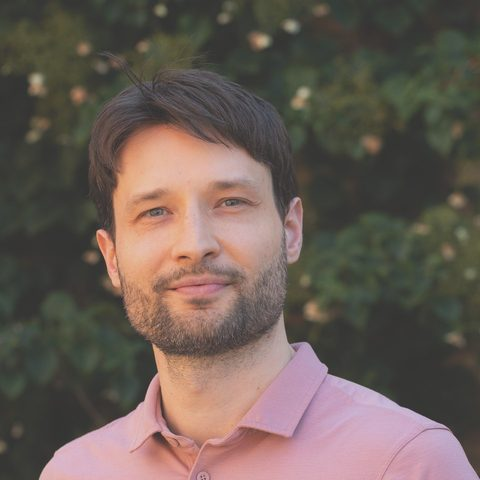
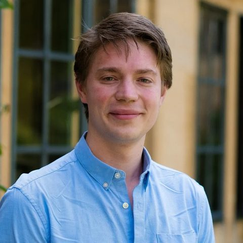
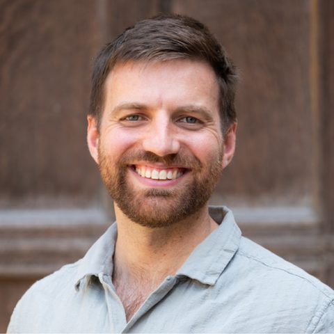
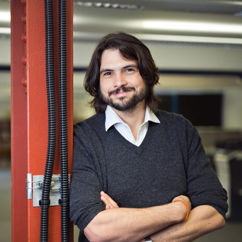
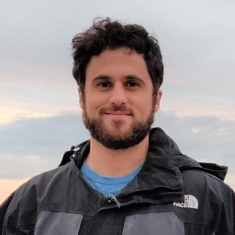
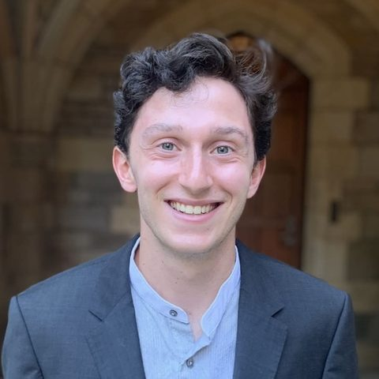
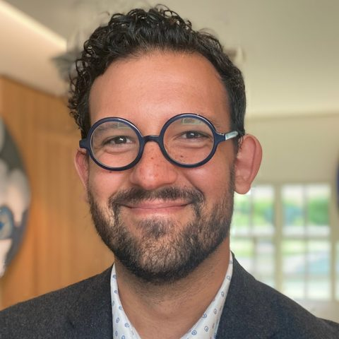
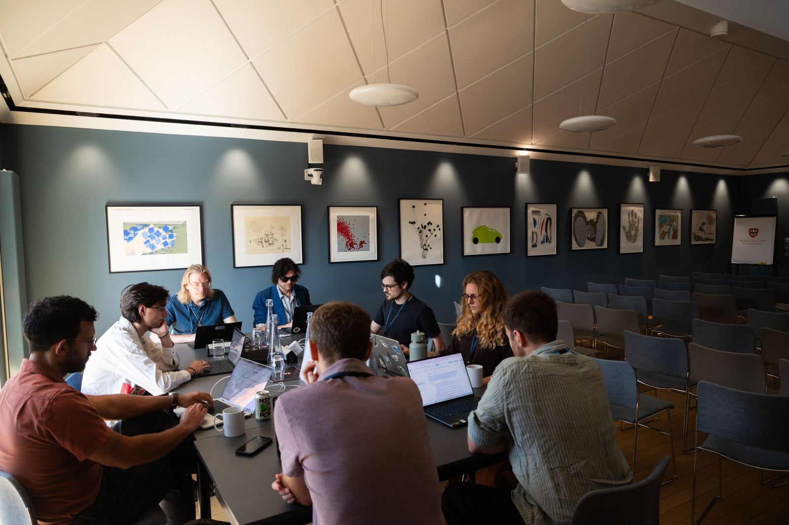

Applications open
Cambridge Digital Minds Fellowship 2027
Help prepare society for AI systems with real or perceived minds: spend twelve weeks on some of the most pressing questions in digital minds, with mentorship from leading researchers.
- Duration
- 12 weeks, 17 May to 9 August 2027
- Format
- Full-time, in person in Cambridge (flexible)
- Stipend
- £1,000 a week
- Deadline
- Apply by 31 January 2027
Our mentors
Every fellow works closely with a mentor researching frontier questions in digital minds.

Lucius Caviola
Cambridge Digital Minds

Caspar Kaiser
Cambridge Digital Minds
Heather Alexander
Laboratory for the Future of Citizenship

Will Millership
PRISM

Henry Shevlin
Leverhulme CFI, Cambridge

Brad Saad
University of Oxford

Cameron Berg
Reciprocal Research
Arvo Muñoz Morán
Rethink Priorities

Peter Salib
University of Houston Law Center
Ben Henke
Institute of Philosophy, London
Key details
- 12 weeks on a research project, with a leading mentor in digital minds.
- 17 May to 9 August 2027.
- In person in Cambridge, full-time. Part-time or remote is possible in some cases. We expect remote fellows to join us in Cambridge for the last week, 2 to 8 August.
- £1,000 a week stipend (£1,400 for senior fellows), plus £6,000 relocation support if you move to Cambridge.
- Flexible where we can. Let us know if you need adjustments to make the programme work for you, for example starting 1 to 3 weeks early or late.
- Apply by 31 January 2027. Decisions by 15 March 2027.
Fellowship tracks
Philosophy
Projects in conceptual and normative questions, such as models of consciousness, moral status and welfare, and individuating digital minds, and more.
Technical
Projects in machine learning, interpretability and evaluations, such as measuring welfare-relevant states and testing model self-reports, and more.
Governance and Law
Projects in policy, the legal status of AI systems and the institutions that will respond to digital minds, and more.
Social Science and Strategy
Projects on public attitudes and the societal and economic impacts of digital minds, plus macrostrategy, prioritisation and communication strategy, and more.
Field-building
Projects in community building, events, outreach and operations for a young field, and more.
Inter-AI morality
How AIs perceive and treat one another, from pairs of agents to whole AI societies. This is a research area rather than a track, so you can work on it within any of the tracks above. We’re especially keen to support it this year.
You can work on a project direction suggested by a mentor, or bring your own idea within a track.
Who is this for?
This could include (but is not limited to) graduate students, postdocs and people with relevant academic, industry, or government backgrounds. You don’t need to have worked in the digital minds field before, but you will need to be seriously interested in it and to have thought about where you might fit in the field.
We are especially excited about applicants who are:
- Early- to mid-career researchers in digital minds
- More experienced researchers in related fields, including (but not limited to) philosophy, computer science, machine learning, macrostrategy, governance, law and policy
- AI safety professionals who want to work on digital minds directly, or where digital minds and AI safety meet
Support throughout the fellowship
Funding
- £1,000 a week stipend (£1,400 for senior fellows)
- £6,000 relocation support if you move to Cambridge
- Travel support for related conferences
Research support
- Expert mentor guidance
- Research management
- Compute and AI tools
- A co-working office in Cambridge open 24/7, with lunch and snacks
Career and community
- Career coaching
- Cambridge Digital Minds Workshop invitation
- Cambridge Digital Minds network
Programme phases
-
Applications
Apply by 31 January 2027 with a short online form, and pick a track. Shortlisted applicants have a short call, and some also an interview or work test. Final decisions by 15 March 2027. Places are limited, so we encourage you to apply as soon as possible.
2027 timeline Stage From To Applications Late Nov 2026 31 Jan 2027 Decisions By 15 Mar 2027 Fellowship 17 May 2027 9 Aug 2027 Extension An extension programme for very strong projects, 3 to 6 months What we look for in applicants
We have a high bar. We are looking for people who could go on to do exceptional research or projects in digital minds after the fellowship. We look for:
- Rigorous reasoning and judgement
- You think clearly about hard questions, weigh the evidence fairly, and make good judgements under uncertainty.
- Independent research ability
- You can make progress on your own and have independent research experience.
- Domain knowledge and skills
- You bring knowledge or skills from a field that can help answer questions about digital minds.
- Long-term motivation
- You are seriously interested in working on digital minds, or a closely related field, beyond the summer.
-
Main programme
12 weeks on a research project, with guidance from an expert mentor and support from our research managers. In Cambridge, you work from our co-working office alongside the team and other fellows. Remote fellows join online where they can.
-
CDM Workshop
A weekend in Cambridge with many of the leading researchers in the field. This year’s focus is inter-AI morality. All fellows are invited.
We expect remote fellows to join us in Cambridge for the last week, 2 to 8 August 2027, which ends with the Workshop. We cover their travel and accommodation.
-
After the fellowship
Fellows will leave with research experience, a mentor who knows their work, and a much better sense of the field. We cannot guarantee full-time positions, but we do aim for all of our fellows to leave with credible next steps. From there, fellows might:
- Extend the fellowship by 3 to 6 months, potentially, for very strong projects
- Apply for funding to do independent work, from one of the funding opportunities in the field
- Work at a digital minds organisation, in a related role
- Start an academic programme, like a PhD or postdoc, in a related area
Apply by 31 January 2027
Places are limited, so we encourage you to apply as soon as possible.
FAQ
About
What is Cambridge Digital Minds?
Cambridge Digital Minds is a research group at the University of Cambridge, led by Lucius Caviola. We work on open questions about digital minds, such as whether AI systems could have consciousness, welfare or moral status, and how society should respond. The fellowship is one of the ways we bring new people into the field. It is run by the University of Cambridge (Leverhulme Centre for the Future of Intelligence), with support from PRISM.
Who should I contact with questions?
Guney Turker at PRISM: guney@prism-global.com
Practicalities
Can I do the fellowship remotely or part-time?
We have a strong preference for fellows to join us in person in Cambridge, but we know this isn't possible for everyone. You can do the fellowship:
- Full-time, in Cambridge or remotely
- Part-time, in Cambridge or remotely
We expect remote fellows to join us in Cambridge for the last week, from 2 August to 8 August 2027, ending with the Cambridge Digital Minds Workshop. Your start and end dates can also move by 2 to 3 weeks. When you apply, you can tell us which options work for you.
Is the fellowship paid?
Fellows will be given a stipend to cover your expenses while taking part in the programme. Fellows receive £1,000 a week full-time. Senior fellows receive £1,400 a week full-time. Fellows who move to Cambridge also receive £6,000 relocation support, which also covers your travel here.
What is the difference between a fellow and a senior fellow?
Senior fellows receive £1,400 a week instead of £1,000. Everything else is the same. You don’t need to choose: everyone is considered for both, and we decide seniority only after making an offer, so it never affects whether you get in. We look at your education, experience and how relevant both are to digital minds. Senior fellows usually have 8+ years in a related field, and senior places are limited. If you would only join as a senior fellow, say so in your application.
Do you help with housing?
We don't arrange housing, but many rooms are available in Cambridge over the summer. Your relocation support should be enough to get you set up.
Who gets the relocation support?
Fellows who move to Cambridge for the fellowship. In Cambridge, you also get a dedicated research space next to the train station, 4 days a week.
You can't receive it if:
- You already live in Cambridge
- You don't move to Cambridge after receiving it, for example if you travel in from a nearby city. In that case, we can help with the cost of those trips instead.
Applying
What does the application process involve?
You fill in a short online form. If you pass the first review, we invite you to a short call with our team. Some candidates may also have an interview or a short work test with a mentor.
When will I hear back?
We review applications as they come in and will make final decisions by 15 March 2027. Places are limited, so we encourage you to apply as soon as possible.
I have another offer with an earlier deadline. Can you decide sooner?
We'll try. Tell us the date of your other deadline in your application. Because we review applications as they come in, applying early helps us decide sooner.
Who can apply? Do I need a degree or a PhD?
In principle, anyone 18 or over can apply, including students. You do not need a PhD or a degree in a specific subject. However, we expect most fellows to have some research experience in a related field and some familiarity with the digital minds literature. If you are not sure, err on the side of applying.
Can I do this alongside another fellowship?
Usually not. The fellowship needs your focus, so we expect you not to run it alongside another fellowship. We may be open to it only in exceptional cases. If you think yours is one, explain why in your application.
I'm based outside the UK. Can I apply?
Yes. Your location is not a factor in your application. To come to Cambridge, you will need at least an Electronic Travel Authorisation (ETA) or a visitor visa, and we will support your application. You can also do the fellowship remotely.
Can I choose my project or mentor?
You can work on a project direction suggested by a mentor, or propose your own idea within a track. We then match you with a mentor based on your track and interests. If you propose your own project, we'll try to find a suitable mentor for it.
What if I'm not sure digital minds is right for me?
You don't need to be certain. We do expect you to be seriously interested in the field and to have thought about where you might fit in it. In your application, you will explain your reasoning.
How can I prepare for the application?
These are good places to start:
- Our beginner's guide, Getting Started in Digital Minds
- Our online course on digital minds
- The Digital Minds Newsletter
- The Exploring Machine Consciousness podcast
- Recent papers by the mentors in your track
- Other fellowships in related fields, such as AI safety
What happens to my application data?
We share your application with PRISM, which helps us review applications. We keep applications for three years after the selection round, so we can invite you to apply again or to future events, and then delete them. You can ask to see your data, or ask us to delete it earlier, by emailing guney@prism-global.com.
During the fellowship
What does a typical week look like?
Most of your week goes into your research project. Each week you have a call with your mentor and a check-in with research management. If you are in Cambridge, you work from our co-working office alongside the team and other fellows, and join cohort meetings and talks. We expect fellows in Cambridge to come to the office at least 4 days a week. Remote fellows join these online where they can. Everyone spends the last week together in Cambridge.
How does mentoring work?
You have at least one hour with your mentor each week, plus messaging in between. Most mentoring happens online. If your mentor is based in London, we can pay for you to visit them once or twice during the fellowship.
Will every track run?
Not necessarily. Our cohort is small, so we may not fill every track every year. If your first-choice track doesn't run, we'll look at your second choice.
What will I produce, and will it be published?
Fellows typically work towards a piece of work, such as a paper, report or policy brief, and discuss it with their mentor early on. A full paper in 12 weeks is often too much, so it can be one finished part of a larger project. In the final week, fellows usually share what they have been working on with the group. If your work is strong, we'll help you publish it, for example as a journal paper or a report on our website. Your mentor and research manager will help you with this.
After the fellowship
Can I extend the fellowship?
Potentially, for very strong projects. Near the end of the fellowship, your mentor and our team decide whether to offer an extension of 3 to 6 months. It depends on the project and on funding.
Will you help me find a role after the fellowship?
Yes. We'll help you find positions in the field, and your career coach will work with you on realistic next steps. The fellowship itself is a training programme, not a job or an internship. Mentors may sometimes hire fellows, or consider them for closed hiring rounds, but this happens through a separate process that is not part of the fellowship.

